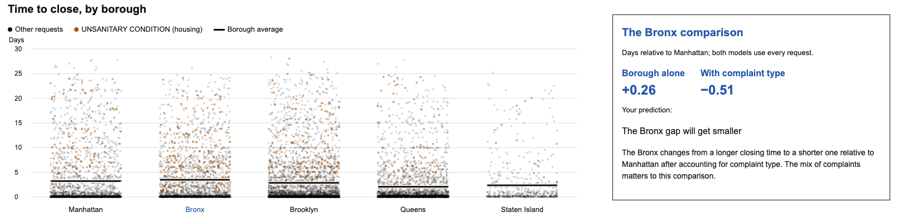

- One week of New York City 311 requests
- Borough, complaint type, time opened, time closed
DHUM / DATA 70600 · Class 8
Learner
I want to know whether requests take longer to close in some boroughs. I'm not a statistician. Which methods could answer this question, and what would each one tell me?
Averages and medians by borough
“A few very slow requests can pull averages upward; medians show the middle request.”
ANOVA
Tests whether average closing times differ across boroughs.
Kruskal–Wallis test
Compares boroughs by ranking closing times, so extreme delays matter less.
Regression with complaint type
“Compare boroughs while accounting for their different mixes of complaints.”
Codex’s advice: “I’d start with summaries, then regression.”
Learner
I have never used regression. Before running anything, tell me in plain words what a regression would do here …
Codex
A regression would compare the time from opening to closing across boroughs. We could first compare borough averages, then include complaint type to ask: Do boroughs still differ when we compare requests with the same recorded complaint type?
From Codex’s walkthrough of the regression
Five ways Codex said it could mislead
Learner
My prediction: the Bronx waits longest. … Now run the regression and walk me through each step you took.
Codex
The Bronx had the longest average closure time in this file, but its difference from Manhattan was about 0.26 days.
In one statistics course, predicting first raised correct answers from 16% to 72% (Chance, Garfield and delMas, 2000)
| Number | For the Bronx | The question it answers |
|---|---|---|
| The difference in averages | 0.26 days, about 6 hours | How much longer do Bronx requests take than Manhattan’s? |
| The p-value | under 0.001 | Could a gap that size happen by chance? |
| R² | about 1% | How much does knowing the borough tell you about any one request? |
Codex on the p-value: “It is not the probability that ‘there is no difference.’”
Learner
Here is my explanation: requests in the Bronx take longer because of where they are; the city treats the Bronx worse. What is wrong or missing?
Codex
Your explanation makes a causal claim that this regression cannot establish.
Statisticians call this fake-data simulation (Gelman, Hill and Vehtari; McElreath)

What Codex cited
An Introduction to Statistical Learning, the chapters on regression and on survival times
What checking found
The sections are real. One section title was wrong. Codex also missed the section on categories like borough.
When I ask you to run a statistical method:
Before running it, tell me in plain words what it assumes and how it could give a wrong answer.
Ask me to predict the result before you show it.
After I explain a result, tell me what is wrong or missing in my explanation.
Name the textbook section or documentation page you are relying on.